# edu 收集
确定目标之后就是对于该学校的信息收集，主要收集：
xh、SFZ、gh、电话号码等信息，因为信息收集是渗透的核心，如果信息收集几分钟，那么你挖洞就是几个星期或者几个月都不会出货，如果信息收集够多，那么挖洞就会很快出货 SRC 首先查看厂商给到的范围 Edu 的话随便挖挖
学号寻找 :
1 | 1. 谷歌语法 学工文件 PDF文件 留学生 学号一般是通过入学年份来排名 |
密码寻找 :
1 | 1. 找到的是泄露身份证后几位,通过爆破余下的位数得出完整的6位数 |
# 谷歌信息收集[1]
- 网站脚本类型
site:sxu.edu.cn ``filetype[2]:asp/aspx/php/jsp - 信息收集密码[3]
site:.edu.cn 默认密码| 初始密码| 学号|职工 - 表格收集身份证包括退学名单
site:.edu.cn 身份证 filetype: pdf|xls|doc - 搜索网站子域名 [4]
site:baidu.com - 搜索 url 链接出现的字 [5]
inurl:后台登陆intext:后台登陆 - 搜索 url 出现 PHP 后台
inurl : admin/login.php - 搜索标题网页出字 [6]
intitle:百度
# 谷歌漏洞收集
- 任意文件下载:
site:域名 filetype:zip|rar|zip|xml - 敏感信息目录
site:域名 index of、intitle:"Index of /admin" - 未授权访问
inurl:php? intext:CHARACTER_SETS,COLLATIONS, ?intitle:phpmyadmin - 后台
site:xxx.com inurl:login|admin|manage|member|admin_login|user - 敏感信息泄露
site:xxx.com intext:管理|后台|登录|用户名|密码|系统|账
号|admin|login|managetem|password|username
- SQL 注入
inurl:asp?id=23 公司[7]
# 信息收集工具
JSFinder[8] JS 中寻找子域名 + url
1 | -ou保存url路径 -os保存子域名 |
Dirsearch 爆破目录
1 | python dirsearch.py -u http://xxxx -o saber.txt |
OneFoaall 子域名
1 | python oneforall.py --target example.com run |
Wappalyzer 看中间件和服务找历史 Nday 去打
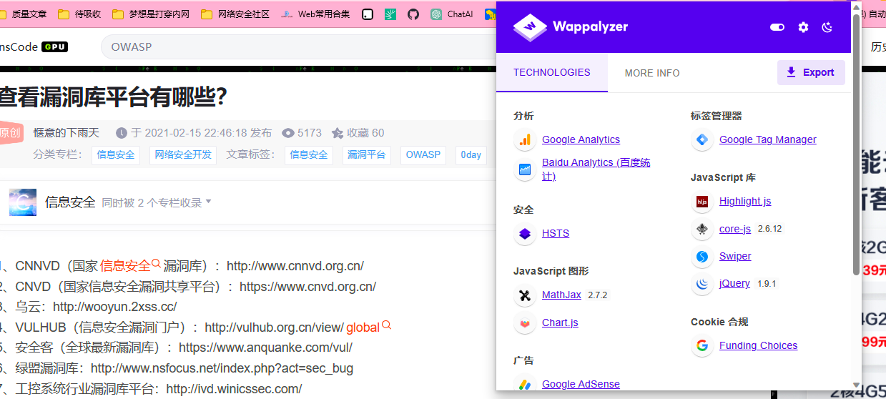
# FOFA 语法[9]
1 | 符号 && 就和 and(并且)一样，多一个寻找条件 |
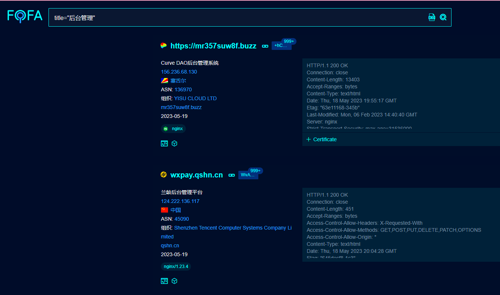
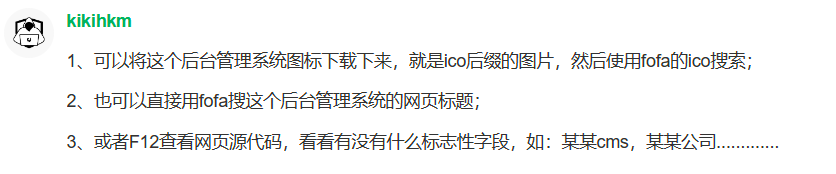
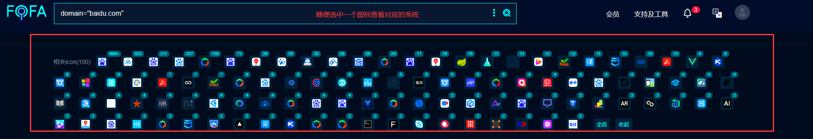
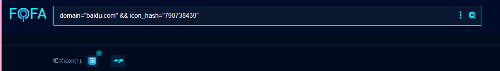
# 互联网收集
edu 刷分最快的就是用账户进后台，互联网搜集指的是去抖音小红书百度贴吧上定位某个学校位置或者加入校园表白贴，里面肯定会有粗心的同学不打码就把学号发出来，有的是得了某些证书更多的是某位同学校园卡丢失被人捡到然后发到公共平台认领，这个思路是无意刷抖音发现的其他 app 也一样，有了学号默认密码暴力破解和信息收集和社工都会很快就可以拿到从而更快的进入后台
# 开发商批量收集
企业开发的通用系统都会有对应的 使用文档 ，使用文档当中必然出现一些基础配置和用户配置等信息，谷歌语法找到相关的系统 批量进行测试
xxxx公司管理系统安装手册
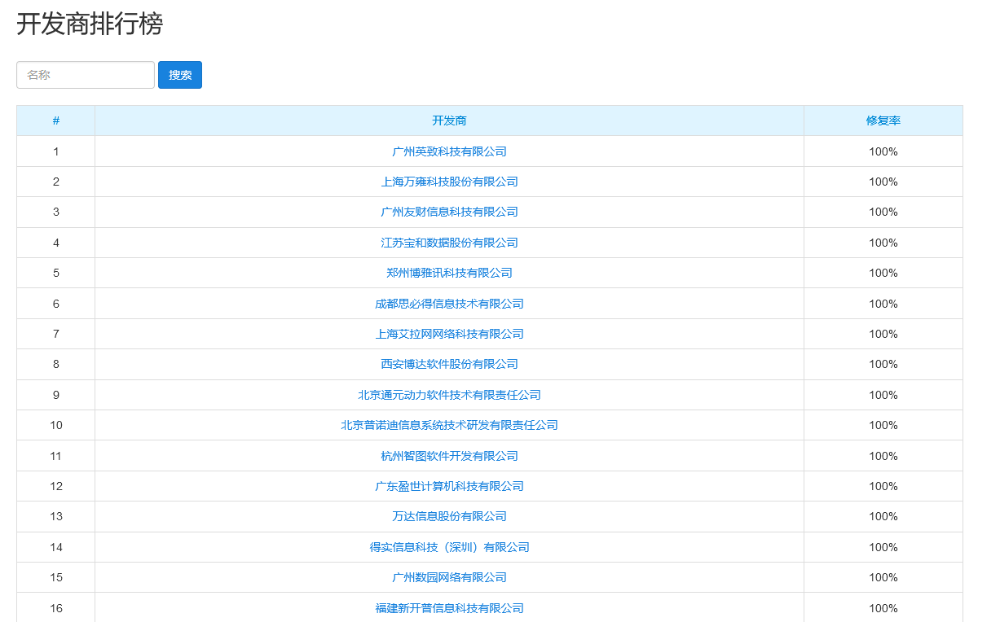
随便找到一家开发商 通过信息收集就拿到了 初始的密码账户，有了初始的之后就可以通过 fofa 定位到使用这个系统的资产公司
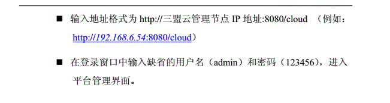
构造手册密码弱口令
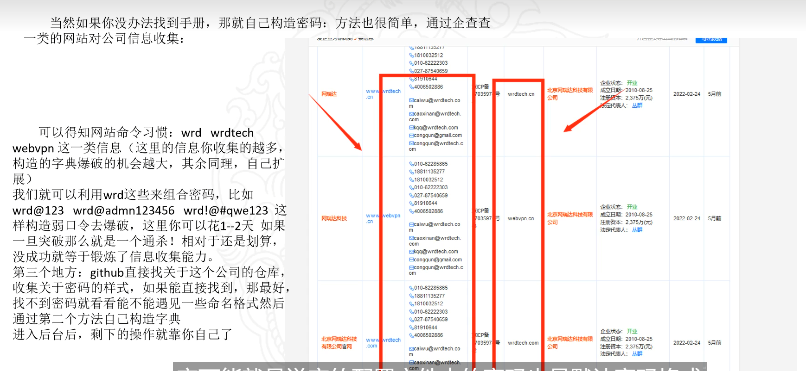
通过 fofa 语法检索 搜索到了基于这个 sm 公司发的系统，下面是所有的用户
1 | org="China Education and Research Network Center" && body="sm" |
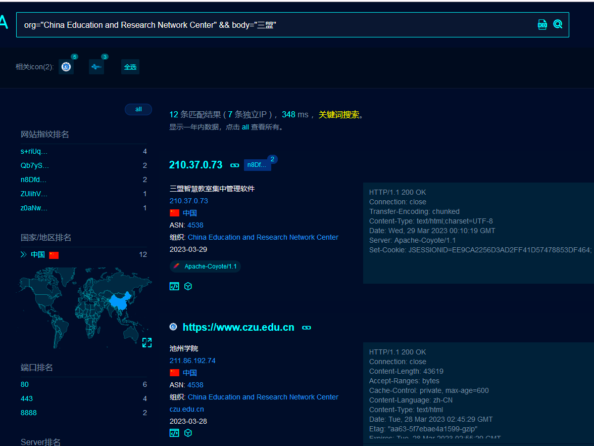
# 接口未授权
利用管理员账户或者老师账户进入后台后，我们点击学生管理处或者别的功能点，Bp 抓包获取它的接口
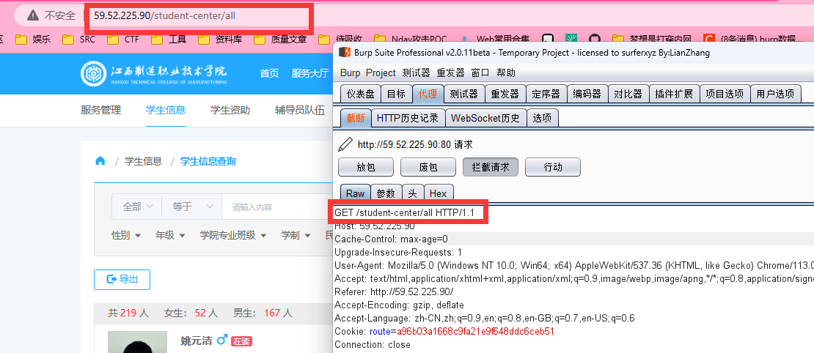
因为是自己学校，所以我另开一个浏览器登陆自己的账户，内网的 IP 是一致的，我将获取到的接口同我的 IP 进行拼接，虽然没有成功但也是一个新的思路，可以测试未授权访问
59.52.225.90/student-center/all
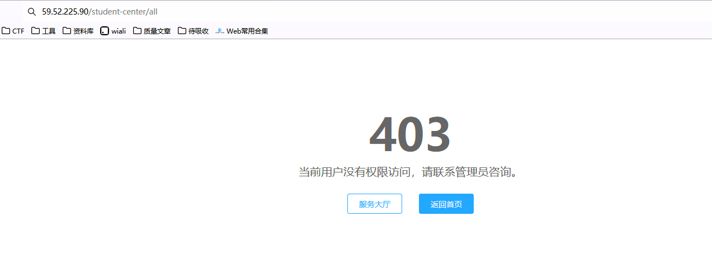
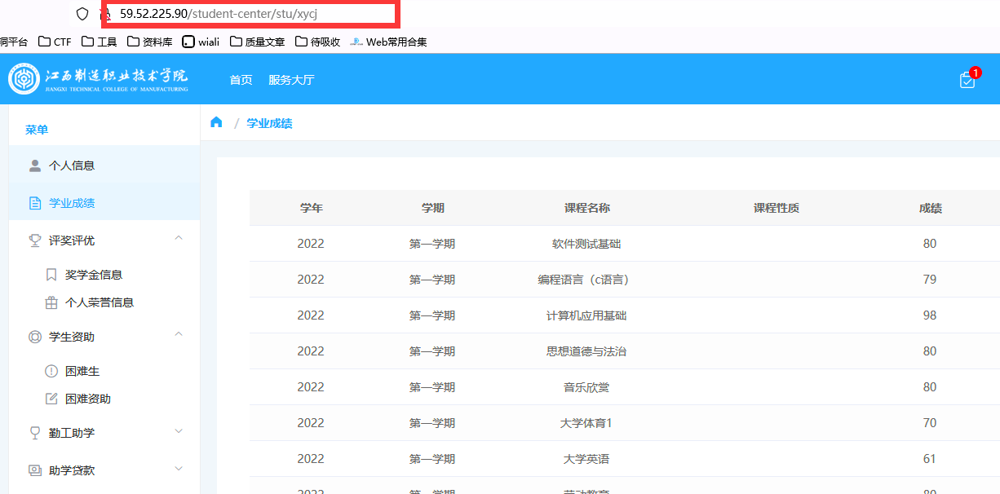
# 目录扫描
后台又是一个新的站点，测试完功能点使用目录扫描扫出指定的一些隐藏路径，我们拼接上去就可以
拼接后会提示我们缺少什么参数，我们直接拼接就是了
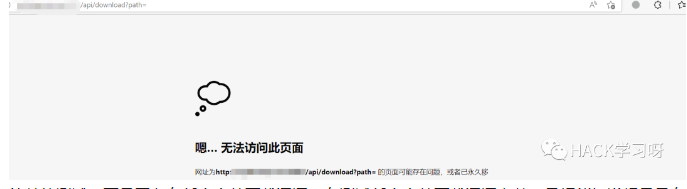
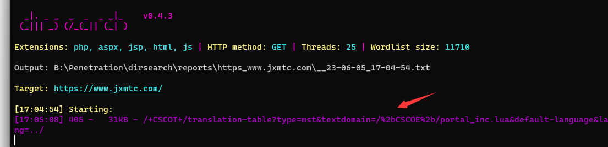
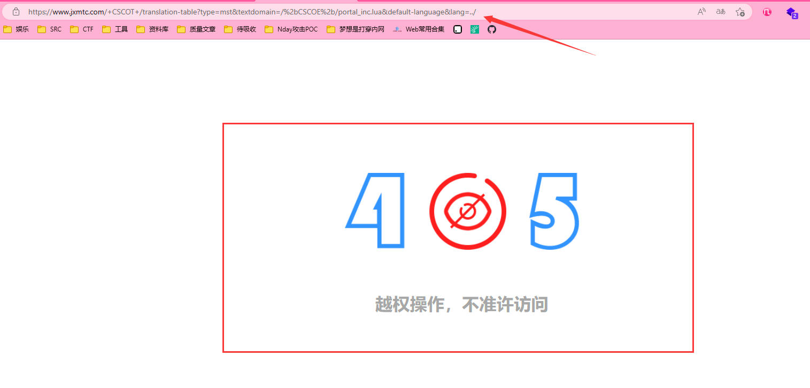
# 手动审计 JS
JS 审计关键字寻找源代码找到 暴露出来的 url
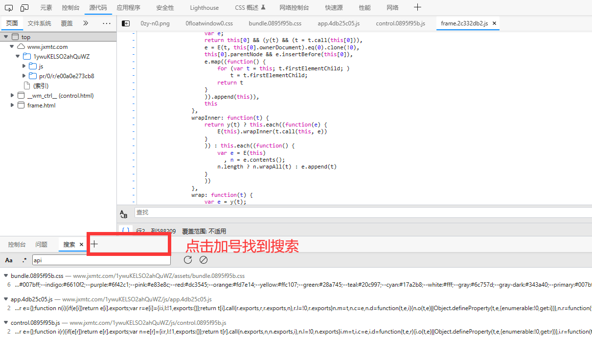
根据获取到的 ur 路径再去进行拼接
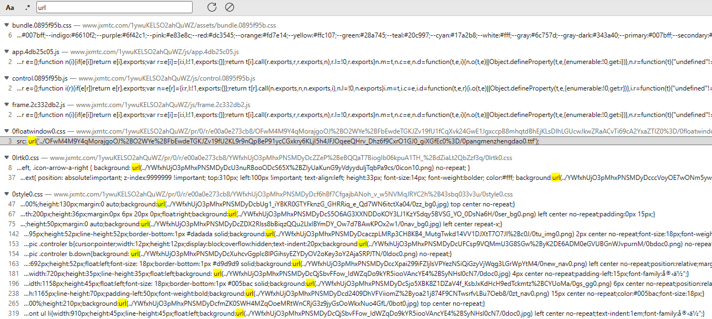
# 字典猜测路径
收集我们看到过的 后路路径比如 admin.php 使用字典进行爆破
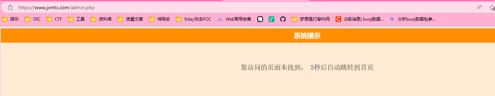
拼接 robots.txt 、 readme.txt 等，建站的管理员可能意识不到这个会泄露他的指纹，在搭建的时候直接解压源码压缩包，没有进行下一步的删除不必要的文件，而 cms 开发商还怕源码使用的用户搞不明白需要什么环境，就附带了这个 readme.* 文件
robots.txt 是一个文本文件，用于告诉搜索引擎爬虫哪些页面可以被抓取，哪些页面不应该被抓取。它通常位于网站的根目录下，搜索引擎爬虫在访问网站时会首先查找该文件。robots.txt 文件中包含了一些指令，如 User-agent、Disallow、Allow 等，用于指定哪些搜索引擎爬虫可以访问哪些页面，哪些页面不应该被访问。通过使用 robots.txt 文件，网站管理员可以控制搜索引擎爬虫的访问行为，保护网站的隐私和安全。同时，也可以通过 robots.txt 文件来优化网站的 SEO，提高网站的排名。
# Nday 攻击
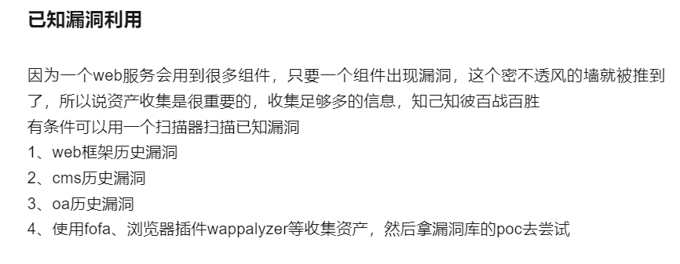
# 语法找站
"系统" && org="China Education and Research Network Center"
下面全部都是某某系统，如果找到了一个就可以达到通杀的目的，通过这些系统来进行挖掘
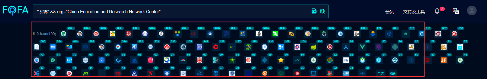
下面这些图标都是可以点击的出现对应的 icon 值 icon_hash="-88638456
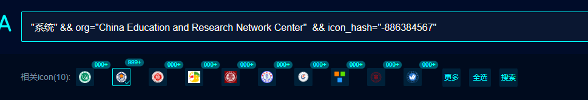
这里出现多少条独立的 IP 就说明这个系统有多少个用户在使用
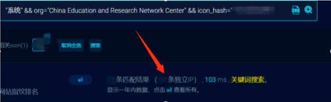
Nday 利用注意观察版本号，一个如果是 OA 系统或者是 CMS 框架就可以去看佩奇文库找相关通杀的 POC, 包括上面的系统也是一样的，通杀上大分
# 攻击流程
查找一个站点的历史漏洞去攻击，有的没有修补就会造成之前的漏洞现在也可以
信息收集找到同班同学的学号密码直接进来了，观察系统使用的是正方软件
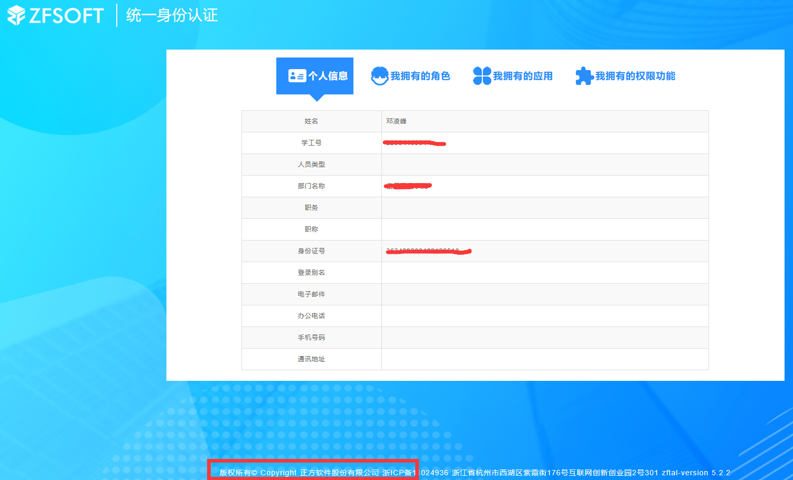
也可以插件查看 探测下 CMS!CMS!CMS , 如果探测不到 cms 的话就去网上的 cms 探测平台还有是 右键尝试可以找到 JS文件 JS 文件可以爆出 CMS版本
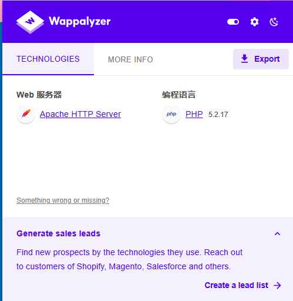
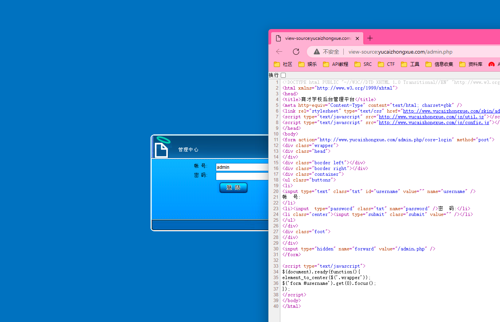
找到根据框架的名称寻找到 Nday 去打

直接搜索漏洞一大堆都可以去试试看，谷歌语法可以挨个去尝试，如果下面写了年份的话带入时间会更好，信息收集也不会局限于子域名什么的，可以社工去加某个 edu 的表白墙，贴吧这种去看别人最新的学校 甚至是套路出默认的密码
intext: 正方软件教务系统
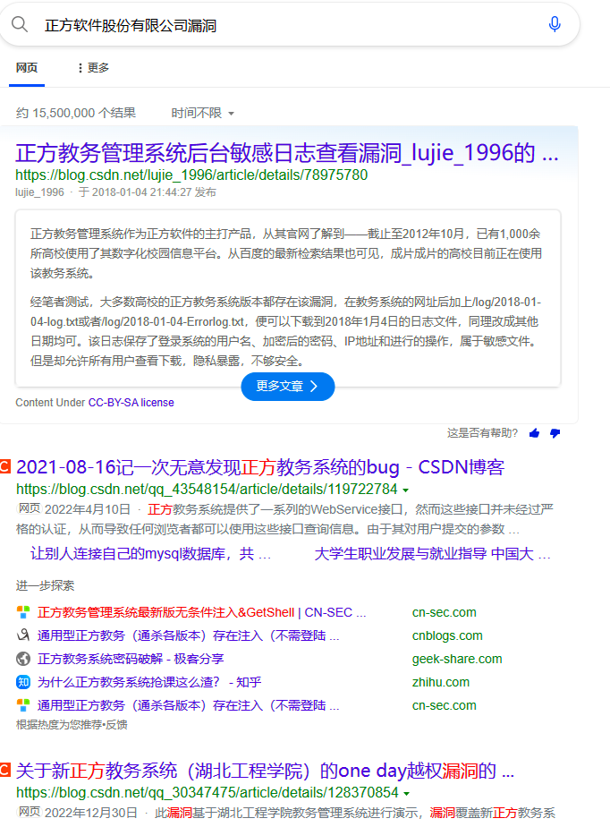
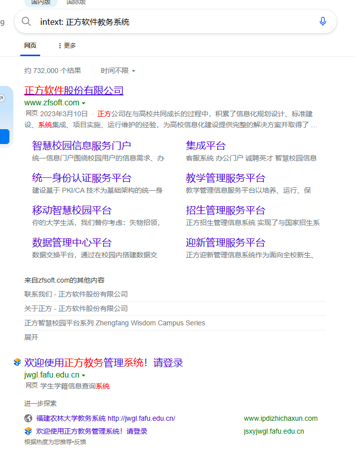
PeiQi 文库去找 Nday, 根据给到的语法去 fofa 网络测绘去找寻资产，同时佩奇文库给到了 POC 如何去利用，自己一个一个刷过去捡洞
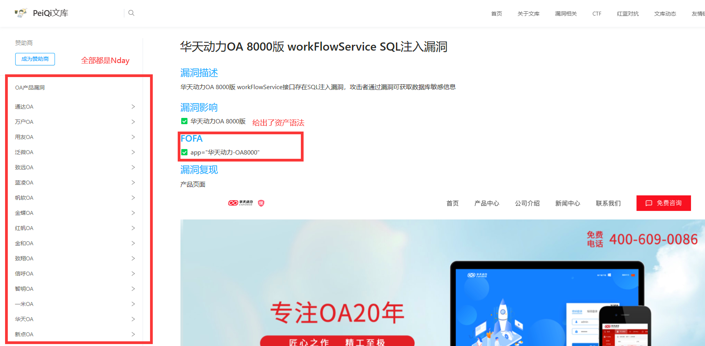
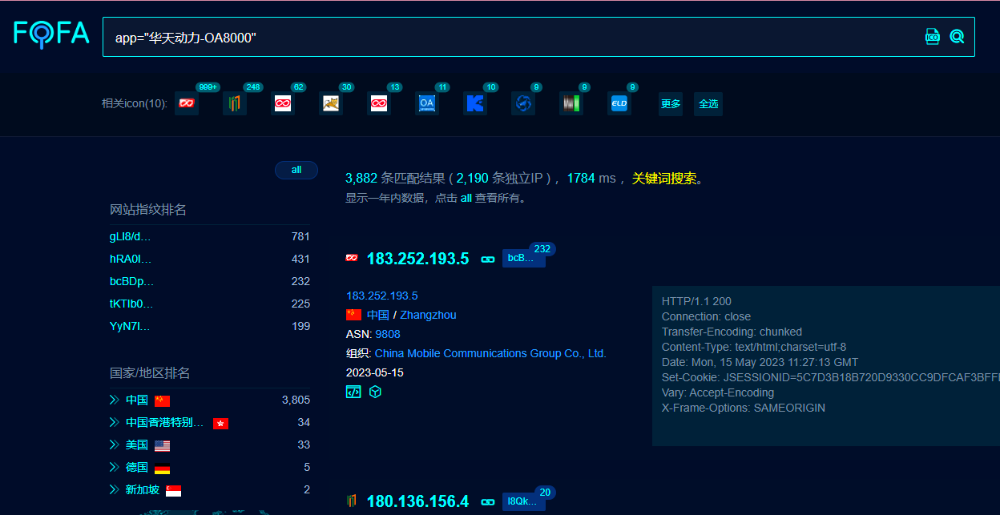
确认目标后同样去可以去各大 EXP POC 收录平台去整理攻击手法，或是是再 GitHub 上找到别人的轮子来利用，下文的 py 脚本也是跟文库给出的 POC 一致的
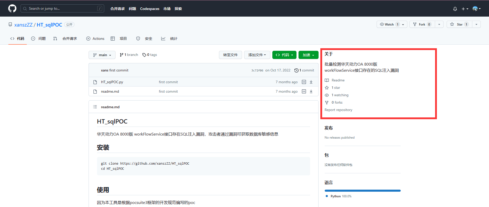
可以不只收集学号，搜集到身份证，最好是最新的那种，打码的情况另说，，有的 edu 后面管理是 jxzz+sfz 后六位，可以通过语法默认密码得知，有了这个之后就可以暴力破解后六位，前提是没有对验证次数做限制，且密码为 jxzz+sfz, 进去后就可以看到个人信息然后构造学号来遍历其他人的账号 ↩︎
filetype 搜索特定扩展名的文件 ↩︎
包括但不限于可以是退学单 助学金 可以批量去找也可以单一 edu 大学 ↩︎
限定百度网站上搜索可以展示所有子域名 ↩︎
返回网页链接中出现的第一个关键字 ↩︎
标题上出现的第一个关键字就是百度 ↩︎
inurl:asp?id= ↩︎
很多网站会通过 ajax 等方式来异步获取数据，
JS会存在链接，url 可以做路径拼接 子域名可以测试
返回码大都是 405 或者 302，405 是使用的 http 方法不对，302 是由于接口做了鉴权直接跳转至登录页面了。。 ↩︎寻找后台管理 登陆 注册 忘记密码；具体使用和谷歌语法相似只是这个 FOFA 更加偏向于资产的收集 ↩︎